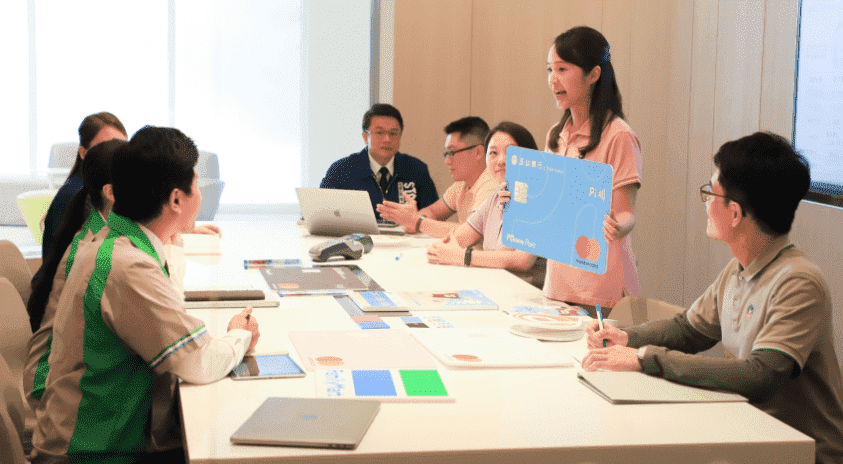
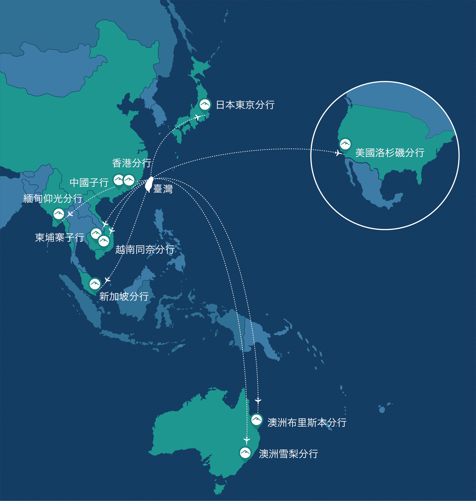

個人金融
個金運用顧客大數據，打造分行等全通路平台，提供虛實整合、顧客導向解決方案，實現普惠金融與高端客群經營。
個金運用顧客大數據，打造分行等全通路平台，提供虛實整合、顧客導向解決方案，實現普惠金融與高端客群經營。
財富管理
「心清如玉，義重如山」，堅持走不一樣的路，贏得顧客信賴。結合產品企劃、市場研究、高端客群經營等職能，透過暖心的服務，滿足顧客需求。
「心清如玉，義重如山」，堅持走不一樣的路，贏得顧客信賴。結合產品企劃、市場研究、高端客群經營等職能，透過暖心的服務，滿足顧客需求。

信用卡與支付金融
以顧客需求出發，拓展優質客群往來，結合數據與科技之應用，打造美好支付體驗，讓玉山卡成為顧客消費生活首選。
以顧客需求出發，拓展優質客群往來，結合數據與科技之應用，打造美好支付體驗，讓玉山卡成為顧客消費生活首選。
數位金融
數位轉型的關鍵是顧客體驗，玉山提供全方位的數位產品，並透過AI技術提供智能化服務，走入顧客生活場景、打造暖心數位生活。
數位轉型的關鍵是顧客體驗，玉山提供全方位的數位產品，並透過AI技術提供智能化服務，走入顧客生活場景、打造暖心數位生活。
產業徵信
實地拜會帶領我們一窺產業面向之豐富、客群態樣之多元，透過解構再結構，化資料為資訊，厚植法金專業職能。
實地拜會帶領我們一窺產業面向之豐富、客群態樣之多元，透過解構再結構，化資料為資訊，厚植法金專業職能。
產品發展
專業的產品專家團隊，依循企業海內外佈局軌跡，發掘跨境商機，創新多元服務模式，創造顧客價值。
專業的產品專家團隊，依循企業海內外佈局軌跡，發掘跨境商機，創新多元服務模式，創造顧客價值。
國際聯貸
國際聯貸業務是玉山與全球連結的高挑戰性國際舞台，透過國際聯貸業務可以接觸到全球不同地區的專案，是立足台灣放眼全球的全球化業務平台。
國際聯貸業務是玉山與全球連結的高挑戰性國際舞台，透過國際聯貸業務可以接觸到全球不同地區的專案，是立足台灣放眼全球的全球化業務平台。
財金交易室
分秒掌握國際動向，擁抱風險創造獲利，海內外分進合擊提供顧客多元、創新的金融服務。
分秒掌握國際動向，擁抱風險創造獲利，海內外分進合擊提供顧客多元、創新的金融服務。
經營管理
玉山中國子行於2016年成立，為台資銀行首例入駐深圳前海建立首家自貿區內的金融總部。
玉山中國子行於2016年成立，為台資銀行首例入駐深圳前海建立首家自貿區內的金融總部。
投資人關係
玉山中國子行於2016年成立，為台資銀行首例入駐深圳前海建立首家自貿區內的金融總部。
玉山中國子行於2016年成立，為台資銀行首例入駐深圳前海建立首家自貿區內的金融總部。
風險管理
玉山中國子行於2016年成立，為台資銀行首例入駐深圳前海建立首家自貿區內的金融總部。
玉山中國子行於2016年成立，為台資銀行首例入駐深圳前海建立首家自貿區內的金融總部。
AI智能應用
玉山中國子行於2016年成立，為台資銀行首例入駐深圳前海建立首家自貿區內的金融總部。
玉山中國子行於2016年成立，為台資銀行首例入駐深圳前海建立首家自貿區內的金融總部。
